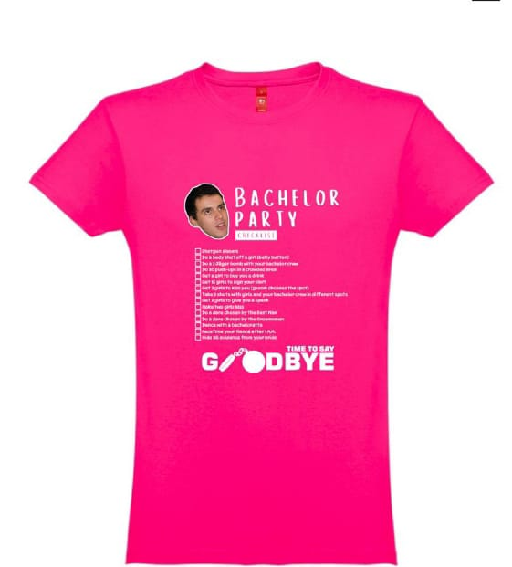

Henrique, o homem do momento
O noivo veste uma t-shirt preta com uma lista de desafios impressa à frente, para ir completando ao longo dos dois dias. É o que mantém o fim de semana dinâmico e divertido. O organizador já fez isto antes e correu muito bem.
A lista vai impressa em inglês, exatamente assim:
- Shotgun a beer
- Do a body shot off a girl
- Do at least 5 Jäger bombs with your bachelor crew
- Do 30 push-ups in a crowded area
- Get a girl to buy you a drink
- Get 25 girls to sign your shirt
- Kiss 5 girls (each one chooses the spot and must sign)
- Ask a girl for her bra or thong and take a photo holding it
- Get 20 girls to spank you
- Do a dare chosen by the Groom's Brother
- Do a dare chosen by the Best Man
- Do a dare chosen by the Groomsmen
- Dance with a bachelorette
- FaceTime your fiancé after 1 A.M.
- Hide all evidence from your bride!
